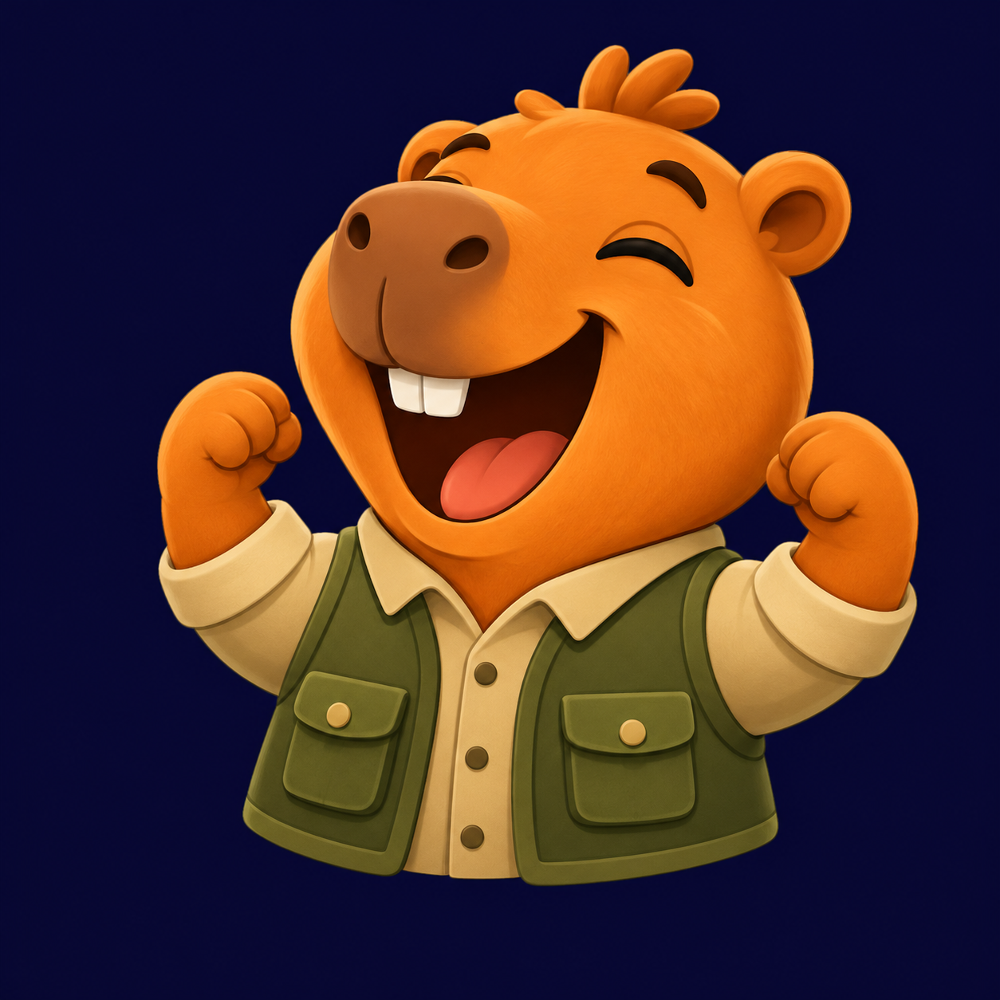
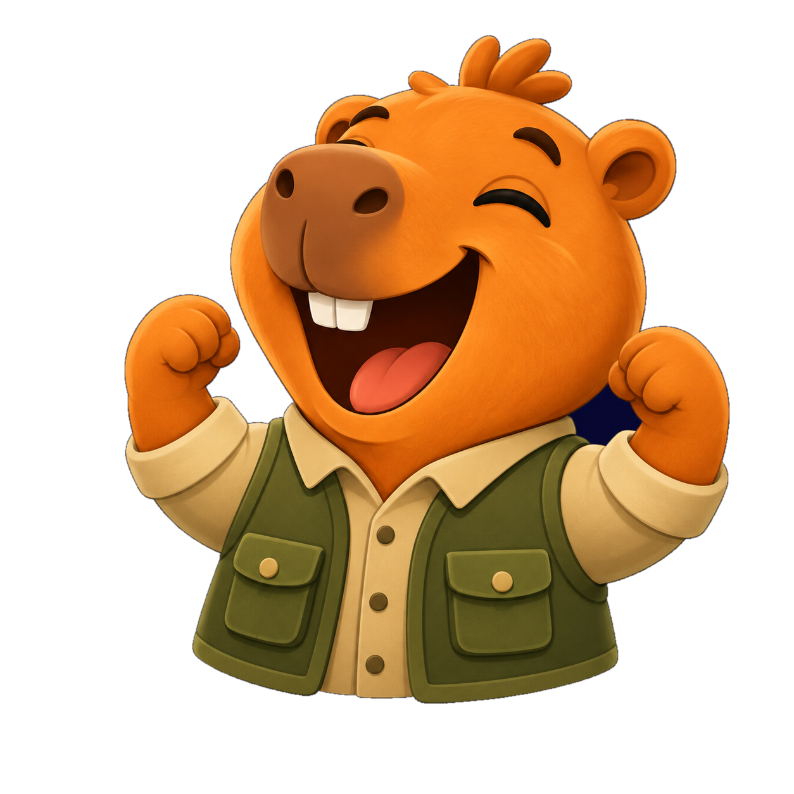

Cada bioma
tem seu par.
Encontre os nomes e suas características.
6 pares · 12 cartas

GEOGRAFIA DO BRASIL
Memória dos Biomas
Associe cada bioma às suas características.
Encontre os pares dos biomas
Combine o nome de cada bioma com sua característica.
Todos os pares
encontrados!
60pontos
6 de 6pares
00:00tempo
Não foi possível salvar o resultado neste navegador. Sua partida foi concluída.
